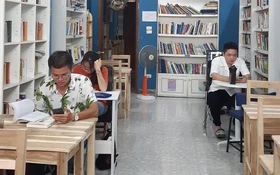

Những hoạt động giải trí
TRANG CHỦ
ĐỌC SÁCH
NGHE NHẠC
THỂ THAO
XEM PHIM
ĐỌC SÁCH
7 cách
giúp con thích đọc sách người Do Thái thường làm
Bé
trai đọc 1.000 quyển sách chỉ trong 6 tháng, mẹ chia sẻ bí quyết giúp con đam mê đọc
8
cuốn sách được các tỷ phú hàng đầu thế giới ưa thích, đọc để nâng tầm bản thân

Đọc sách, uống trà
miễn phí giữa lòng Hà Nội
NGHE NHẠC
Ca
khúc "Sashimi" của Chi Pu bị chỉ trích phản cảm, nhạc sĩ Hứa Kim Tuyền lên tiếng phân trần
Đen sắp phát hành sản phẩm âm nhạc thứ 4 trong năm 2022
Sự
trở lại của Hiền Hồ: "Công chúng sẽ là những quan tòa công bằng nhất"
Hyolyn (Sistar) gây bão với loạt hit quen thuộc, Hoàng Thùy Linh và Đức Phúc diễn cực sung ở lễ hội âm nhạc Việt
- Hàn
THỂ THAO
Nữ
cầu thủ dám thay đổi "cuộc chơi" trong môn thể thao vua, tạo ra hàng loạt dấu ấn lịch sử
Góc chuyên gia: Mách mẹ bí quyết tiếp động lực để con rèn ý chí từ thể thao
Nữ hoàng Anh, người
nâng tầm giá trị thể thao
Những "tay ngang" độc đáo của thể thao Việt Nam
XEM PHIM
Các
bộ phim Trung thu trên VieON mà bạn nhất định phải xem một lần trong đời
Phim
đáng xem về Nữ hoàng Anh: "The Crown" không thể vượt qua tác phẩm đoạt giải Oscar này
Nam
chính ở phim Việt có tỷ suất người xem cao nhất cả nước: Đa tài và cuộc hôn nhân hạnh phúc sau bão tố

Những lý do ra rạp xem “Cù Lao Xác Sống”: Bộ phim Zombie tiên phong của Việt Nam
CÔNG TY CỔ PHẦN VCCORP
Tầng 17, 19, 20, 21 Tòa nhà Center Building - Hapulico Complex, Số 1 Nguyễn Huy Tưởng, Thanh Xuân, Hà Nội.
Tel: 0942 86 11 33
Email: giaitrihanoi@gmail.com